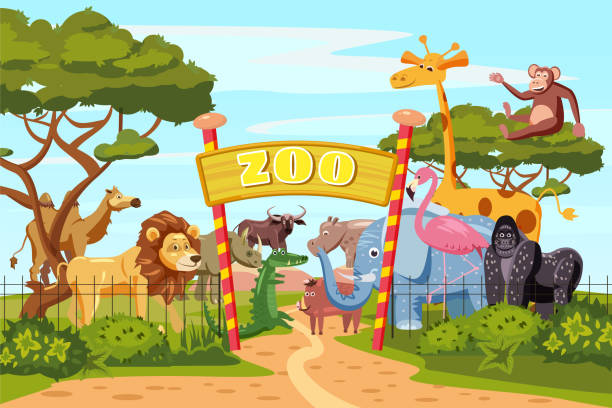
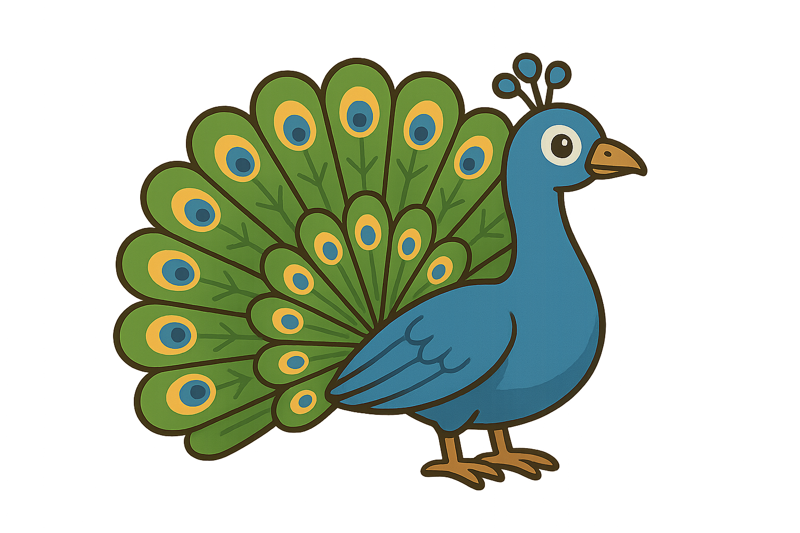
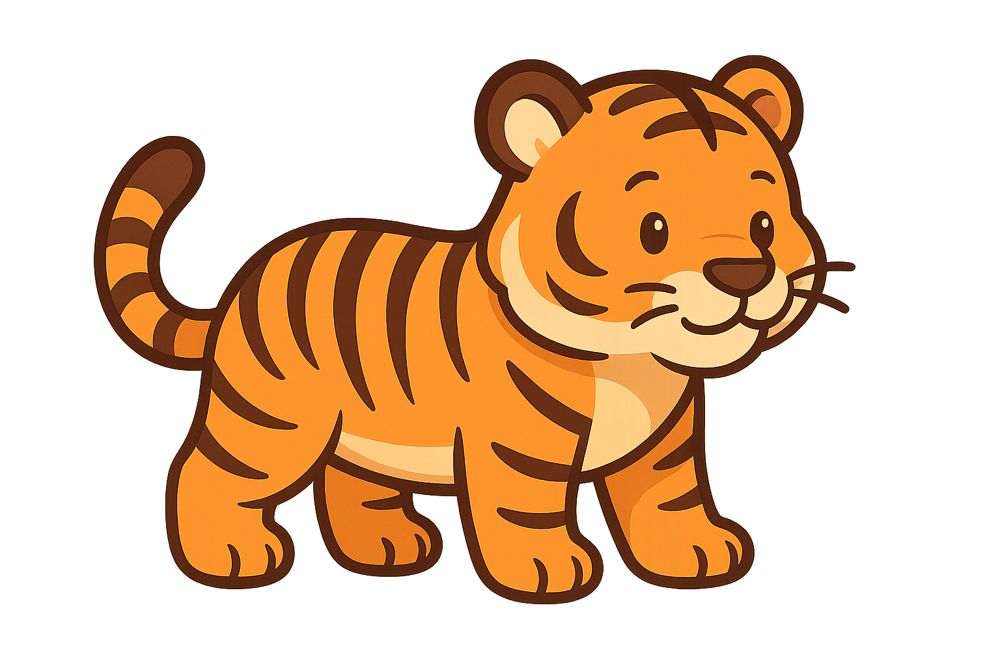
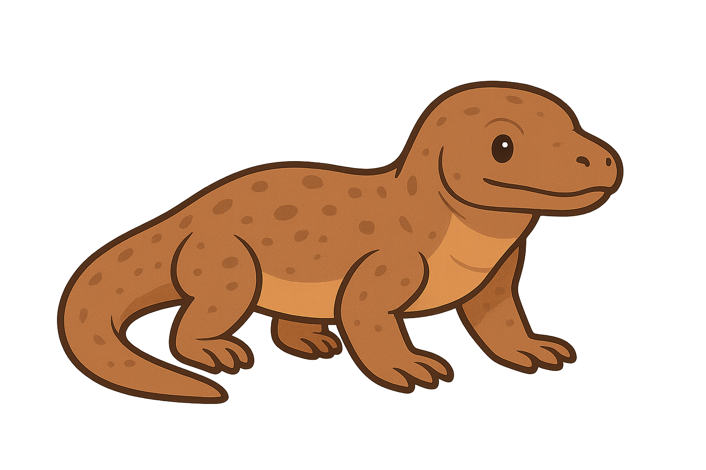

Gajah adalah mamalia darat terbesar di dunia yang dikenal dengan tubuhnya yang besar, telinga lebar, dan belalainya yang panjang untuk berbagai fungsi. Terdapat dua jenis utama: gajah Afrika dan gajah Asia, yang dibedakan berdasarkan ukuran telinga dan bentuk kepala. Gajah adalah herbivora cerdas dengan daya ingat kuat, kemampuan sosial yang tinggi, dan peran penting dalam ekosistemnya, meskipun populasi nya terancam oleh pemburuan dan hilangnya habitat.

Burung merak adalah keluarga ayam hutan dari genus Pavo dan Afropavo yang terkenal karena bulu jantannya yang indah dan warna-warni. Spesies merak antara lain merak India (Pavo cristatus), merak hijau (Pavo muticus), dan merak Kongo (Afropavo congensis). Merak jantan memamerkan bulunya dengan mengembangkan ekornya menyerupai kipas untuk menarik perhatian merak betina, dan mereka juga memiliki suara khas untuk menarik pasangan.

Harimau (spesies Panthera tigris) adalah kucing besar yang merupakan predator puncak di Asia, dikenal dengan belang oranye dan hitamnya yang unik untuk kamuflase. Hewan karnivora ini adalah pemburu ulung yang mengandalkan penglihatan dan suara untuk menangkap mangsa seperti babi hutan dan rusa. Harimau adalah satwa soliter yang hidup menyendiri di wilayah teritorial luas, dan keberadaannya saat ini terancam punah. .

Komodo (Varanus komodoensis) adalah kadal terbesar di dunia yang endemik di Indonesia, hidup di pulau Komodo, Rinca, Flores, Gili Montang, dan Gili Dasami, dengan ciri-ciri fisik tubuh besar, kulit bersisik, dan ekor panjang. Hewan karnivora ini memiliki indra penciuman tajam menggunakan lidah bercabang dan mampu berenang, bahkan memiliki racun pada air liurnya yang bersifat mematikan. Komodo saat ini terancam punah akibat perubahan iklim, hilangnya habitat, dan kurangnya mangsa, sehingga upaya konservasi melalui